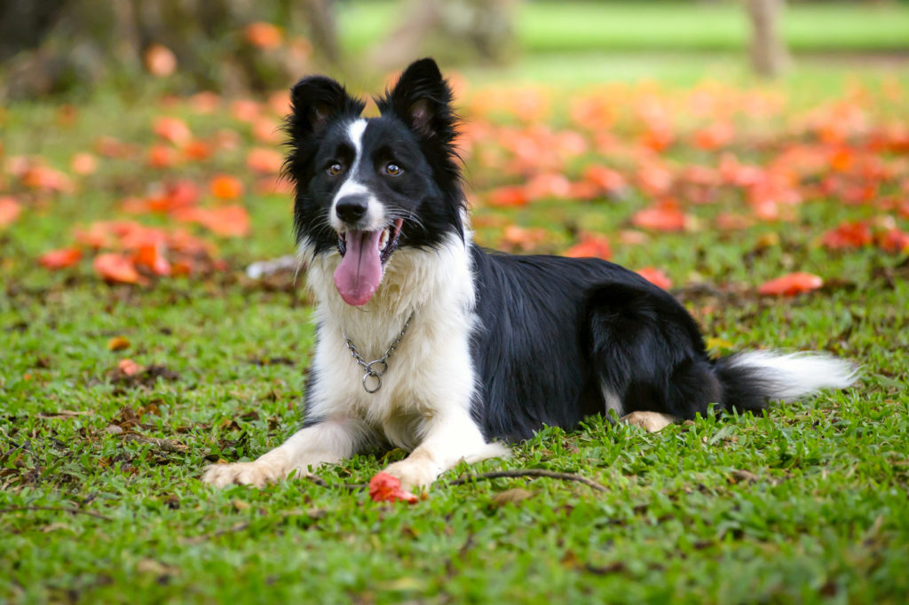
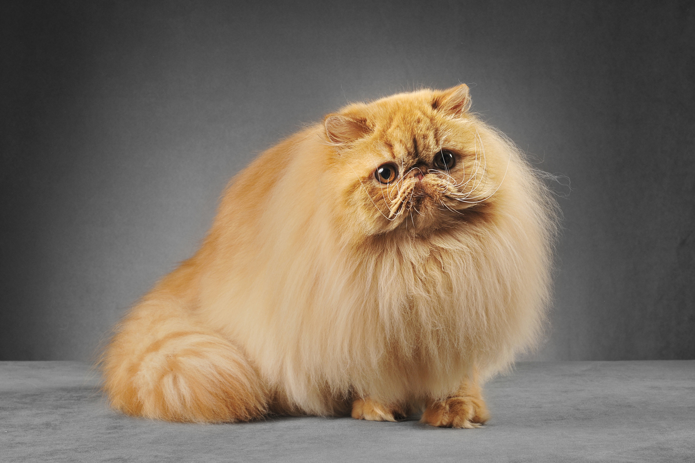
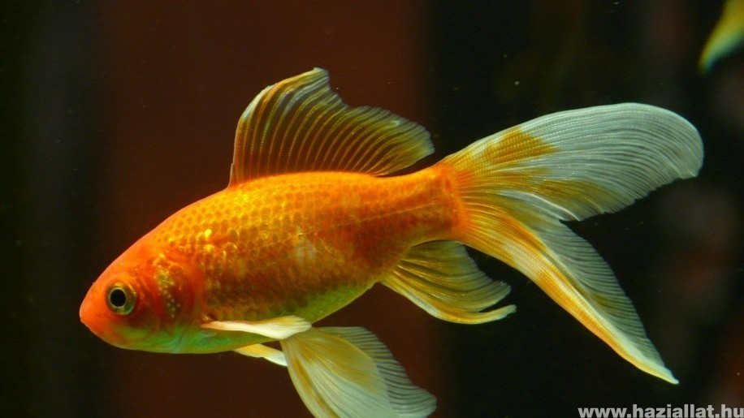

Német Dog

A Német Dog, más néven Német Dogge, hatalmas méreteivel és barátságos természetével lenyűgözi az
állatbarátokat. Rendkívül hűséges és kedves társ, ideális családoknak és aktív életet élő személyeknek.
Impozáns megjelenésük ellenére békés és játékos, tökéletesen illeszkednek a családi környezetbe,
különösen szeretik a gyerekeket. Könnyen kezelhető szőrzetük és energikus személyiségük teszi őket
ideális választássá az erő, szépség és jószívűség kombinációját keresők számára.
Golden Retriever

A Golden Retriever egy kiválóan kedves és intelligens kutyafajta. Ismertek a barátságos természetükről
és könnyen taníthatóságukról. Ideális választás családoknak, mivel jól kijönnek gyerekekkel és más
háziállatokkal is.
A Golden Retrieverek aktív kutyák, akik élvezik a mozgást és szívesen részt vesznek családi
tevékenységekben. A selymes szőrzetük és ragyogó arany színük a fajta egyik jellegzetessége.
Ha olyan kutyát keresel, amely örömmel fogad és mindig kész a játékra, a Golden Retriever remek
választás lehet.
Border Collie

A Border Collie a munkakedv, intelligencia és gyorsaság tökéletes kombinációjával rendelkezik.
Kivételesen kifinomult és könnyen tanuló kutyák, ideális választás azoknak a gazdiknak, akik kihívásokra
vágynak. Ezek az aktív kutyák élvezik a különböző tevékenységeket, legyen az agility, szellemi kihívások
vagy hosszú séták. Szép szőrzetük és éber tekintetük miatt nemcsak intelligensek, hanem vonzó külsővel
is rendelkeznek. Ha olyan kutyát keresel, amely nemcsak hűséges társ, hanem aktív partner is, a Border
Collie remek választás lehet számodra.
Boxer
A Boxer egy erős, izmos kutyafajta, amely rendkívül élénk és barátságos. Ezek a kutyák híresek játékos
természetükről és hűségükről. Ideális választás lehet családoknak és aktív életet élő személyeknek
egyaránt.
A Boxerek kiválóan alkalmasak kiképzésre, mivel intelligensek és engedelmesek. Jól kijönnek a
gyerekekkel és más háziállatokkal is. Aktívak, szeretik a mozgást és a játékot.
A Boxerek rövid szőrzetük miatt könnyen kezelhetőek, és az élénk személyiségük miatt sokak számára vonzó
kutyafajtát alkotnak. Ha olyan kutyát keresel, amely energikus, barátságos és könnyen kezelhető, a Boxer
remek választás lehet.
Perzsa macska

A Perzsa macska egy csodálatosan szép fajta, melyet a hosszú selymes szőrzete és lapos arcformája tesz
egyedivé. Ezek a macskák rendkívül nyugodtak és szeretetteljesek, gyakran ideális társak családoknak és
lakókörnyezeteknek.
A Perzsa macskák igénylik a rendszeres szőrápolást és tiszta környezetet. Játékosak, de általában
csendes és békés környezetet részesítik előnyben.
Ha olyan macskát keresel, amely szép megjelenésű és nyugodt természetű, a Perzsa macska egy kiváló
választás lehet.
Sziámi macska

A Sziámi macska híres a gyönyörű kék szemeiről és különleges maszkjáról. Ezek a macskák élénkek,
intelligensek és rendkívül társaságkedvelők. Szeretik kifejezni véleményüket és kommunikatívak.
A Sziámi macska igényli a szellemi kihívásokat és a társaságot. Aktívak és játékosak, így ideális
választás lehet azoknak, akik aktívabb macska társaságára vágynak.
Ha olyan macskát keresel, amely élénk és szociális, a Sziámi macska remek választás lehet.
Brit rövidszőrű macska

A Brit rövidszőrű macska kiegyensúlyozott és barátságos természetű fajta. Ezek a macskák hűségesek és
könnyen alkalmazkodnak a lakókörnyezethez. Jól kijönnek más háziállatokkal és gyerekekkel is.
A Brit rövidszőrű macskák rövid, sűrű szőrzetük miatt könnyen kezelhetőek. Nyugodt és szeretetteljes
magatartásuk miatt ideálisak lehetnek otthonokba.
Ha olyan macskát keresel, amely kiegyensúlyozott és könnyen kezelhető, a Brit rövidszőrű macska egy jó
választás lehet.
Szfinx macska

A Szfinx macska egy fajta, amelyet azért ismernek fel, mert nincs szőrzete, és bőre sima és lágy
tapintású. Ezek a macskák kifejezetten érdekes megjelenésűek és rendkívül szociálisak.
A Szfinx macskák aktívak és játékosak. Mivel nincs szőrzetük, a testhőmérsékletüket könnyen átadják, és
szeretik a meleg helyeket. Jól kijönnek más háziállatokkal és gyerekekkel is.
Ha egy olyan macskát keresel, amely különleges és barátságos, a Szfinx macska izgalmas választás lehet.
Guppy
A Guppy a hobbikertészek körében népszerű diszhal, színpompás külsővel és mozgékony viselkedéssel.
Kiváló választás lehet a kezdők számára is.
Harcoshal

A Harcoshal erős színű testtel és különleges uszonyokkal rendelkező diszhal. Az élénk színei és egyedi
megjelenése miatt vonzó lehet az akváriumban.
Neonhal
A Neonhal apró, élénk kék és piros színeivel kiemelkedik a közösségi akváriumokban. Békés természetük
miatt jól kijön más kisebb halakkal.
Aranyhal

Az Aranyhal egy klasszikus választás az akváriumokba, szép arany színeivel és különleges megjelenésével.